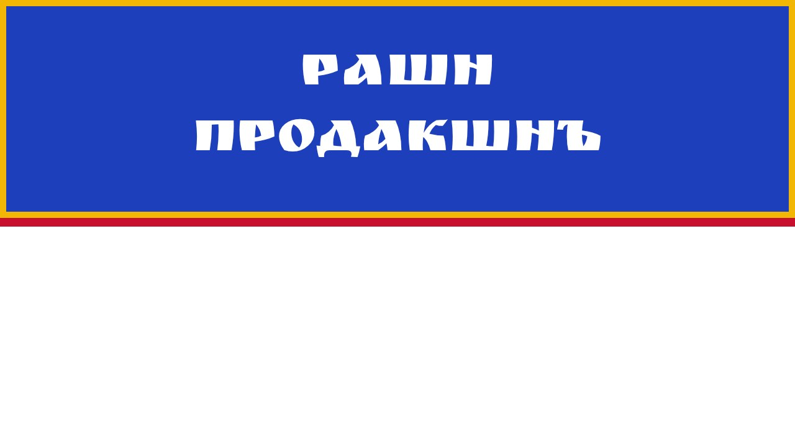
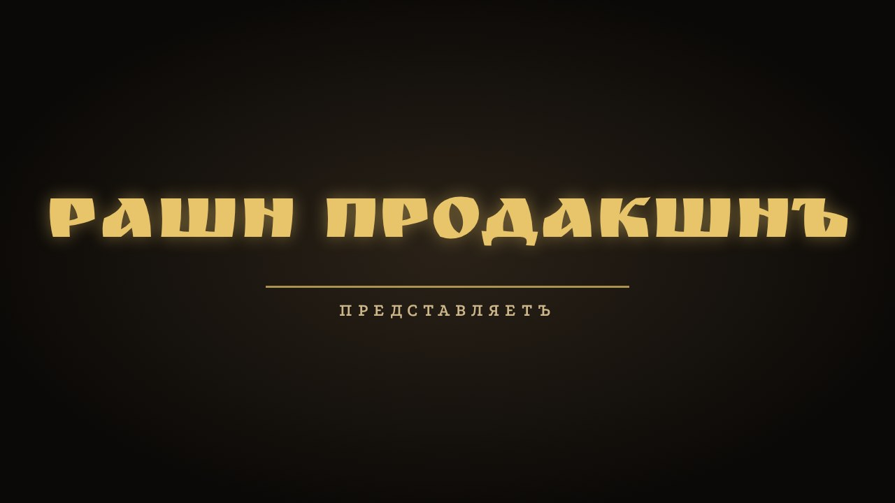
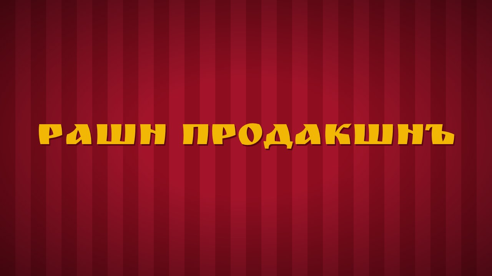
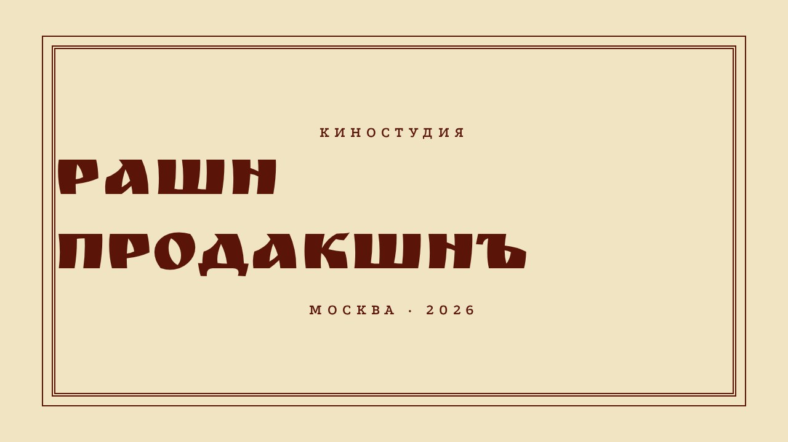

Выбери номер. Надпись проявляется из темноты за 1 секунду, стоит 3 секунды, уходит в затемнение и сразу начинается ролик. Музыка ролика не сдвигается: заставка идёт со своим тихим звуком (проектор или колокольчик) или в тишине.



